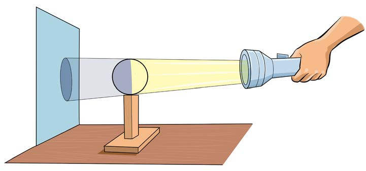

Experiment 7: Investigating formation of shadow
Aim:
To demonstrate the formation of a shadow
Materials:
Ball, flashlight, cup, chair, sunlight, stool, table and accessible application tools.
Procedure
1.
Hold the cup or book facing the sunlight. What did you see/observe?
2.
Place the table and chair outside the classroom in the sunlight.
3.
Look/observe under the table and chair. What do you see/observe?
4.
Enter a dark room. Place the ball on the support such as stool and direct the flashlight at the ball as shown in Figure 9. What do you see/observe?
5.
Record your observations for steps 1, 3 and 4.
Figure 9: Flashlight directed at a ball and formation of shadow on the wall

6.
What would happen if there were no light energy?